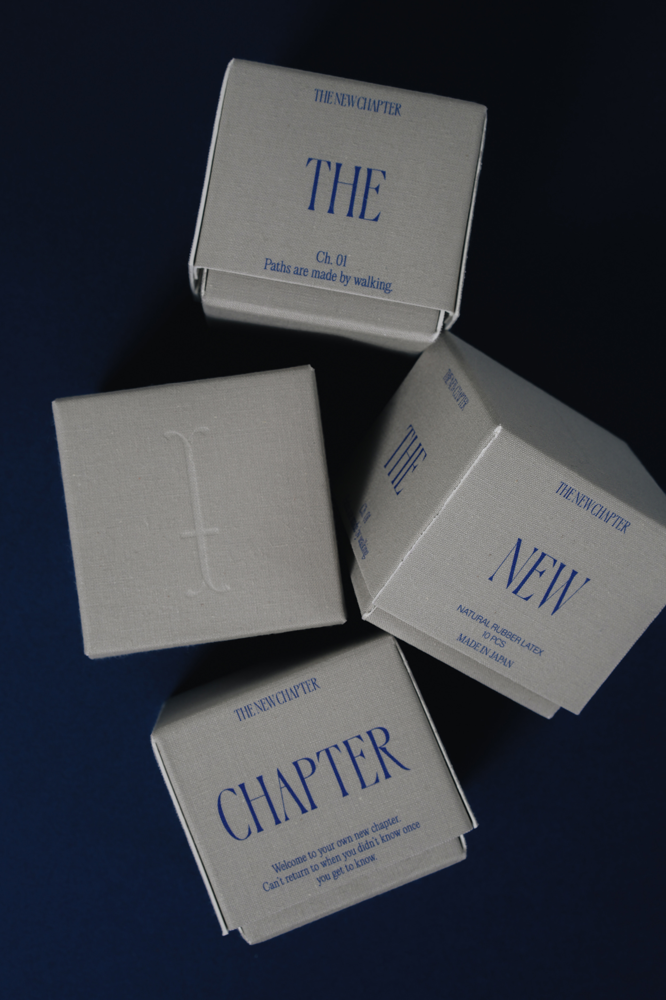
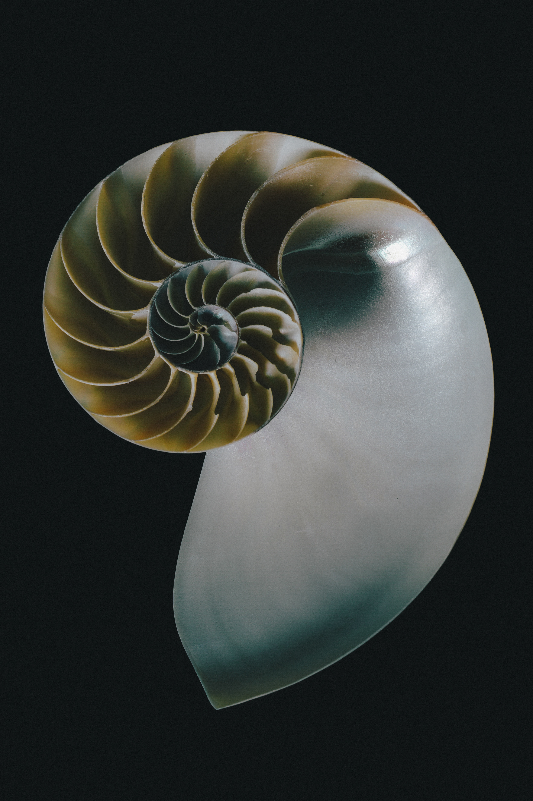

Modern Adult Brand
私たちを囲む見えない枠からするりと抜け出していくあなたが眩しくて、
わたしは俯いた。
その枠の外はあまり人気が無い。
何故なら、すべてを自分で考え、選択しながら生きていかなくてはいけないから。
面倒だから。今の枠内でうまく振る舞うほうが楽だから。
それでもあなたは自らの手で新しい章を始める。
それはきっと決まっていたことで、内なる衝動に近い。
いずれわたしの姿だ。
ようこそ、あなたの新しい章へ。
一度知ってしまうと知らなかったころにはもう戻れない。
でも、もう知ってしまったあなたへ。
自らここにたどり着いたあなたへ。
You sneak out of the invisible frame surrounding us and you are so bright,
so I hang my head down.
However, you will start with the new chapter in your own hands.
Think you were somehow fated to do — it's close to an inner urge.
Welcome to your own new chapter.
Can't return to when you didn't know once you get to know.
To you who already got to know.
To you who reached here on your own.

About
どんなジェンダー・セクシャリティの人も手に取りやすいモダンなセクシャルウェルネスプロダクトを開発・販売。
アイテムは、国産のオーガニック原料を使用したインティメイトケアローションと、スタイリッシュなコンドーム。
アパレルセレクトショップやランジェリーショップにて取扱い有り。SNSにてジェンダーにまつわる発信や、オフラインイベントを開催している。





" 自らと対話する "
" 性のジェンダーギャップをなくす "
THE NEW CHAPTERは、包括的性教育を目的としています。
日本は世界的に見て、性教育が充分ではありません。正しい性教育を受けていなければ、間違った情報に気付くことができません。それは性行為だけでなく、他者と関わりながら生きる日常生活にも支障をきたします。
わたしたちは、包括的な性の知識＝リレーションシップの基盤と考え、すべての人が「NO」と「YES」を尊重し自分らしくいられる社会をめざしています。
自らと対話し、感覚を探す旅
満たされた先では、世界のざわめきが輪郭を現す
そしてあなたは、それぞれで在ることを許しあう、
しなやかな境界線を見つける
日常のさまざまな場面で、鈍感にならざるを得ない忙しい現代。
いつしか不快を無視するスキルばかりが上がっていく。
立ち止まり、身体と心の感覚に誠実に向き合ってみる。
自らを満たすことで、不快なものに敏感になり境界線を引けるようになる。
自分との信頼関係を築くことは、他者へのコントールを超え
ありのままを尊重し合う新しい章への鍵となります。
Online Shop
Shop THE NEW CHAPTER